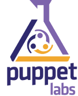

MCollective : lancez des actions en parallèle sur des machines distante
Contents
|  | |
| Software version | 2.0.0 |
|---|---|
| Operating System | Debian 7 / RedHat 6.3 |
| Website | MCollective Website |
| Last Update | 14/05/2013 |
| Others | |
{kind=link}
1 Introduction
Mcollective, pour " Marionnette Collective ", est un logiciel écrit par R.I. Pienaar. Le but est de faciliter la gestion d’un parc comportant de nombreuses machines depuis un point central. Il peut se comparer à des outils comme Fabric, ou Capistrano, car il permet de lancer de nombreuses actions en parallèle sur des machines distantes, mais il s’en différencie par un point notable : il ne repose pas sur SSH. En effet, le programme s’appuie sur un middleware (intergiciel si ma mémoire de langage avec du sirop au caramel ne me trompe pas) et dispose de fonctionnalités qui font de vous non plus une loutre, mais LA loutre ultime.
Pourquoi cela ? Parce qu’une bonne partie du travail répétitif et lassant est pris en charge directement dans le programme. Avec les deux logiciels cités précédemment, vous devez savoir quelles machines sont là, quelle configuration elles embarquent. Bref, vous devez tenir une liste à jour. Avec Mcollective, la découverte des clients est automatique : les machines viennent s’enregistrer sur un serveur, et lors d’une requête, les messages sont dispatchés vers tous les hôtes via le middleware.
Mcollective utilise un daemon qui tourne sur chaque machine. Ce dernier utilise des agents afin d’effectuer les différentes actions que l’on attend de lui : gérer des packages, des services ou envoyer des messages. Chaque agent s’inscrit à un "topic" du middleware et attend les messages qui lui correspondent.
J'ai tenté une installation mi Debian 6, mi Debian 7 pour profiter des packages ActiveMQ, mais je vous le déconseil, car il y a pas mal de problèmes de dépendances liées à la version de Ruby et gems. C'est pourquoi je suis parti sur une Debian 7.
Une interface web a vue le jour pour l'administration MCollective : MCOMaster.
2 Prérequis
Mcollective utilise un serveur de queues, je vais donc vous en proposer 2 :
- Stomp server : fait pour les petites installations
- ActiveMQ : une usine à gaz sous Java, mais nécessaire pour les grosses installations
Utilisez celui qui vous intéresse. Voici comment est structuré et doit fonctionner Mcollective :
{kind=link}
- Le client correspond à la machine qui fait office de serveur Mcollective en fait. Il est le noeud qui va contrôler les serveurs Mcollective.
- Les serveurs Mcollective sont représentés ici par des noeuds sous forme de cluster. Pour qu'une machine puisse être contrôlée par le client Mcollective, il faut que le serveur soit installé dessus.
- Le middleware correspond au serveur de queues (ActiveMQ par exemple).
3 Middleware
3.1 Stomp server
3.1.1 Installation
L'installation du stomp serveur est facile :
| |
aptitude install stompserver libstomp-ruby |
3.1.2 Configuration
Et sa configuration est simple, modifiez le host par l'ip de l'interface sur laquelle il doit écouter. Ou bien toutes :
| |
---
:daemon: true
:working_dir: /var/lib/stompserver
:logdir: /var/log/stompserver
:pidfile: /var/run/stompserver/pid
:storage: /var/lib/stompserver/storage
:etcdir: /etc/stompserver
:queue: memory
:auth: false
:debug: false
:group: stompserver
:user: stompserver
:host: 0.0.0.0:port: 61613 |
3.2 ActiveMQ
3.2.1 Installation
On lance l'installation d'ActiveMQ :
| |
aptitude install activemq |
3.2.2 Configuration
Nous allons configurer ActiveMQ. Je n'expliquerais pas toutes ces lignes, je l'ai simplement prise sur le site de PuppetLab :
| |
<beans xmlns="http://www.springframework.org/schema/beans" xmlns:amq="http://activemq.apache.org/schema/core" xmlns:xsi="http://www.w3.org/2001/XMLSchema-instance" xsi:schemaLocation="http://www.springframework.org/schema/beans http://www.springframework.org/schema/beans/spring-beans-2.0.xsd http://activemq.apache.org/schema/core http://activemq.apache.org/schema/core/activemq-core.xsd http://activemq.apache.org/camel/schema/spring http://activemq.apache.org/camel/schema/spring/camel-spring.xsd"> <bean class="org.springframework.beans.factory.config.PropertyPlaceholderConfigurer"> <property name="locations"> <value>file:${activemq.conf}/credentials.properties</value> </property> </bean> <broker xmlns="http://activemq.apache.org/schema/core" brokerName="localhost" useJmx="true" schedulePeriodForDestinationPurge="60000" dataDirectory="/var/lib/activemq/activemq-data"> <destinationPolicy> <policyMap> <policyEntries> <policyEntry topic=">" producerFlowControl="false"/> <policyEntry queue="*.reply.>" gcInactiveDestinations="true" inactiveTimoutBeforeGC="300000" /> </policyEntries> </policyMap> </destinationPolicy> <managementContext> <managementContext createConnector="false"/> </managementContext> <plugins> <statisticsBrokerPlugin/> <simpleAuthenticationPlugin> <users> <authenticationUser username="mcollective" password="marionette" groups="mcollective,everyone"/> <authenticationUser username="admin" password="secret" groups="mcollective,admin,everyone"/> </users> </simpleAuthenticationPlugin> <authorizationPlugin> <map> <authorizationMap> <authorizationEntries> <authorizationEntry queue=">" write="admins" read="admins" admin="admins" /> <authorizationEntry topic=">" write="admins" read="admins" admin="admins" /> <authorizationEntry topic="mcollective.>" write="mcollective" read="mcollective" admin="mcollective" /> <authorizationEntry queue="mcollective.>" write="mcollective" read="mcollective" admin="mcollective" /> <authorizationEntry topic="ActiveMQ.Advisory.>" read="everyone" write="everyone" admin="everyone"/> </authorizationEntries> </authorizationMap> </map> </authorizationPlugin> </plugins> <systemUsage> <systemUsage> <memoryUsage> <memoryUsage limit="20 mb"/> </memoryUsage> <storeUsage> <storeUsage limit="1 gb" name="foo"/> </storeUsage> <tempUsage> <tempUsage limit="100 mb"/> </tempUsage> </systemUsage> </systemUsage> <transportConnectors> <transportConnector name="openwire" uri="tcp://0.0.0.0:61616"/> <transportConnector name="stomp" uri="stomp://0.0.0.0:61613"/> </transportConnectors> </broker> </beans> |
Ceci va créer un utilisateur 'mcollective' avec le mot de passe 'marionette' et donne full accès (lecture,écriture et admin) à "/topic/mcollective.*". Adaptez le mot de passe selon vos besoins.
Nous allons insérer un fichier avec les identifiants par défaut d'ActiveMQ :
| |
cp /usr/share/doc/activemq/examples/conf/credentials.properties /etc/activemq/instances-available/main |
Ensuite nous allons rajouter quelques options pour qu'il n'y ai pas de problème au boot d'ActiveMQ :
| |
# Time to wait for the server to start, in seconds STARTTIME=5 # !!! Use a specific data directory for each instance ACTIVEMQ_BASE="/var/lib/activemq/$INSTANCE" # Use openjdk-6 as default Java runtime JAVA_HOME="/usr/lib/jvm/java-6-openjdk/" # Set some JVM memory options ACTIVEMQ_OPTS="-Xms512M -Xmx512M -Dorg.apache.activemq.UseDedicatedTaskRunner=true" # Arguments to launch /usr/bin/activemq ACTIVEMQ_ARGS="start xbean:activemq.xml" # ActiveMQ configuration files ACTIVEMQ_CONF="/etc/activemq/instances-enabled/$INSTANCE" |
Ensuite nous allons activer cette configuration et démarrer ActiveMQ :
| |
ln -s /etc/activemq/instances-available/main /etc/activemq/instances-enabled/main /etc/init.d/activemq start |
4 MCollective
4.1 Prérequis
4.1.1 Debian
Pour installer MCollective, nous allons faire simple et mettre en place le repository Debian :
| |
wget http://apt.puppetlabs.com/puppetlabs-release-stable.deb dpkg -i puppetlabs-release-stable.deb |
Et ensuite, nous mettez à jour :
| |
aptitude update |
4.1.2 RedHat
Tout comme Debian, il existe un repo yum sur Red Hat et nous allons installer un package qui va le configurer pour nous :
| |
rpm -ivh http://yum.puppetlabs.com/el/6/products/x86_64/puppetlabs-release-6-6.noarch.rpm |
4.2 Serveur
Nous allons voir dans cette partie comment installer et configurer Mcollective sur le serveur.
| |
| Le serveur correspond au 'client' sur le schéma. C'est à dire la machine qui prendra le contrôle sur tous les noeuds Mcollective |
4.2.1 Installation
Installez mcollective sur Debian :
| |
aptitude install mcollective mcollective-client |
Il vous sera proposé une première option. Si il y a puppet sur cette machine, il vous demandera de le supprimer, dites non et une seconde proposition plus souple vous sera proposé. Acceptez cette dernière.
4.2.2 Configuration
Nous allons configurer la partie serveur qui va nous permettre de faire les interrogations au serveur :
| |
topicprefix = /topic/ main_collective = mcollective collectives = mcollective libdir = /usr/share/mcollective/plugins logger_type = console loglevel = warn # Plugins securityprovider = psk plugin.psk = unset connector = stomp plugin.stomp.host= localhostplugin.stomp.port= 61613plugin.stomp.user= mcollectiveplugin.stomp.password= marionette # Facts factsource = yaml plugin.yaml = /etc/mcollective/facts.yaml |
Puis configurer la partie cliente, même si c'est le serveur, cela nous permettra de faire des actions sur cette machine également :
| |
######################## # GLOCAL CONFIGURATION # ######################## topicprefix = /topic/ main_collective = mcollective collectives = mcollective libdir = /usr/share/mcollective/plugins logfile = /var/log/mcollective.log loglevel = info daemonize = 1 classesfile = /var/lib/puppet/classes.txt ########### # MODULES # ########### # Security securityprovider = psk plugin.psk = unset # Stomp connector = stomp plugin.stomp.host = mcollective.deimos.fr plugin.stomp.port = 61613 plugin.stomp.user = mcollective plugin.stomp.password = marionette # AgentPuppetd plugin.puppetd.puppetd = /usr/sbin/puppetd plugin.puppetd.lockfile = /var/lib/puppet/state/puppetdlock plugin.puppetd.statefile = /var/lib/puppet/state/state.yaml plugin.puppet.pidfile = /var/run/puppet/agent.pid plugin.puppetd.splaytime = 100 plugin.puppet.summary = /var/lib/puppet/state/last_run_summary.yaml ######### # FACTS # ######### factsource = facter plugin.yaml = /etc/mcollective/facts.yaml plugin.facter.facterlib = /var/lib/puppet/lib/facter fact_cache_time = 300 |
Maintenant, redémarrez mcollective :
| |
/etc/init.d/mcollective restart |
4.3 Client
Nous allons voir dans cette partie comment installer et configurer Mcollective sur les machines clientes.
4.3.1 Installation
4.3.1.1 Debian
Installez mcollective :
| |
aptitude install mcollective |
4.3.1.2 RedHat
Installez mcollective :
| |
yum install mcollective |
4.3.2 Configuration
Sur vos clients, il faut simplement éditer la configuration et mettre les bonnes valeurs :
| |
######################## # GLOCAL CONFIGURATION # ######################## topicprefix = /topic/ main_collective = mcollective collectives = mcollective libdir = /usr/share/mcollective/plugins logfile = /var/log/mcollective.log loglevel = info daemonize = 1 classesfile = /var/lib/puppet/classes.txt ########### # MODULES # ########### # Security securityprovider = psk plugin.psk = unset # Stomp connector = stomp plugin.stomp.host = mcollective.deimos.fr plugin.stomp.port = 61613 plugin.stomp.user = mcollective plugin.stomp.password = marionette # AgentPuppetd plugin.puppetd.puppetd = /usr/sbin/puppetd plugin.puppetd.lockfile = /var/lib/puppet/state/puppetdlock plugin.puppetd.statefile = /var/lib/puppet/state/state.yaml plugin.puppet.pidfile = /var/run/puppet/agent.pid plugin.puppetd.splaytime = 100 plugin.puppet.summary = /var/lib/puppet/state/last_run_summary.yaml ######### # FACTS # ######### factsource = facter plugin.yaml = /etc/mcollective/facts.yaml plugin.facter.facterlib = /var/lib/puppet/lib/facter fact_cache_time = 300 |
5 Utilisation
Nous allons maintenant passer à la partie intéressante... l'utilisation :-)
5.1 Détecter les machines
Il existe une commande permettant de voir quels sont les hosts disponibles :
| |
> mco ping mcollective.deimos.fr time=45.62 ms server1 time=52.32 ms ---- ping statistics ---- 2 replies max: 52.32 min: 45.62 avg: 48.97 |
5.2 Obtenir de l'aide
Pour obtenir de l'aide et voir les modules installés :
| |
> mco help The Marionette Collective version 2.0.0 controller Control the mcollective daemon facts Reports on usage for a specific fact filemgr Generic File Manager Client find Find hosts matching criteria help Application list and help inventory General reporting tool for nodes, collectives and subcollectives nrpe Client to the Nagios Remote Plugin Execution system package Install and uninstall software packages pgrep Distributed Process Management ping Ping all nodes plugin MCollective Plugin Application rpc Generic RPC agent client application service Start and stop system services |
5.3 Récupérer des statistiques
Il est possible de récupérer des statistiques sur vos noeuds de cette façon :
| |
> mco controller stats
Determining the amount of hosts matching filter for 2 seconds .... 2
mcollective.deimos.fr> total=14, replies=1, valid=14, invalid=0, filtered=12, passed=2
server1> total=14, replies=13, valid=14, invalid=0, filtered=0, passed=14
Finished processing 2 / 2 hosts in 82.81 ms |
5.4 Faire l'inventaire d'un noeud
Le but de cette commande est de nous montrer tout ce dont nous avons à disposition sur un noeud mcollective :
| |
> mco inventory server1
Inventory for server1:
Server Statistics:
Version: 2.0.0
Start Time: 2012-08-02 16:00:33 +0200
Config File: /etc/mcollective/server.cfg
Collectives: mcollective
Main Collective: mcollective
Process ID: 2746
Total Messages: 27
Messages Passed Filters: 26
Messages Filtered: 0
Expired Messages: 1
Replies Sent: 25
Total Processor Time: 0.7 seconds
System Time: 0.49 seconds
Agents:
discovery filemgr nrpe
package process rpcutil
service shellcmd
Configuration Management Classes:
[...]
openssh openssh::common
openssh::redhat openssh::ssh_keys
timezone timezone::redhat
Facts:
architecture => x86_64
[...]
virtual => vmware |
5.5 Reloader tous ses noeuds
Si vous venez de déployer un nouvel agent et que vous souhaitez recharger Mcollective sans le redémarrer, il est possible de le faire depuis le client :
| |
mco controller reload_agents |
Si vous souhaitez le faire que sur une seule machine :
| |
mco controller reload_agents -W /machine/ |
5.6 Utiliser les commandes RPC
Il est possible d'utiliser tous les modules sous forme de commande RPC. Voici un exemple de syntaxe avec le module service :
| |
mco rpc service start service=httpd |
5.7 Les filtres
Je vais reprendre les exemples de la documentation officiel, car ils sont très explicites :
| |
# all machines with the service agent mco ping -A service mco ping --with-agent service # all machines with the apache class on them mco ping -C apache mco ping --with-class apache # all machines with a class that match the regular expression mco ping -C /service/ # all machines in the UK mco ping -F country=uk mco ping --with-fact country=uk # all machines in either UK or USA mco ping -F "country=/uk|us/" # just the machines called dev1 or dev2 mco ping -I dev1 -I dev2 # all machines in the domain foo.com mco ping -I /foo.com$/ # all machines with classes matching /apache/ in the UK mco ping -W "/apache/ location=uk" |
Pour les filtres encore plus poussés, je vous conseil la documentation officielle. Voici un exemple d'une recherche un peu complexe :
| |
mco service restart httpd -S "((customer=acme and environment=staging) or environment=development) and /apache/" |
6 Les Modules
Les modules permettent de rajouter des fonctionnalités à Mcollective. Par exemple la prise en charge des services, des packages, des plugins nrpe...
Nous allons voir ici comment en installer certains. Pour rendre cet article simple et compatible RedHat/Debian, nous utiliserons des variables pour l'installation des plugins et nous allons créer quelques dossiers manquants :
| |
# Red Hat
test -d /usr/libexec/mcollective/mcollective && mco_plugins=/usr/libexec/mcollective/mcollective
# Debian
test -d /usr/share/mcollective/plugins/mcollective && mco_plugins=/usr/share/mcollective/plugins/mcollective
mkdir -p $mco_plugins/{aggregate,specs} |
6.1 Services
Le module Service permet de d'utiliser la gestion des services : stop, start, restart, enable, disable et status. Nous allons devoir installer une partie sur les serveurs et une autre partie sur le client.
6.1.1 Serveur
Sur tous les noeuds serveurs, ajoutez ceci :
| |
cd $mco_plugins/agent wget -O service.rb "https://raw.github.com/puppetlabs/mcollective-plugins/master/agent/service/agent/puppet-service.rb" |
Redémarrez Mcollective.
6.1.2 Client
Sur le client :
| |
cd $mco_plugins/agent wget "https://raw.github.com/puppetlabs/mcollective-plugins/master/agent/service/agent/service.ddl" wget -O service.rb "https://raw.github.com/puppetlabs/mcollective-plugins/master/agent/service/agent/puppet-service.rb" cd $mco_plugins/application wget "https://raw.github.com/puppetlabs/mcollective-plugins/master/agent/service/application/service.rb" |
Redémarrez Mcollective.
6.1.3 Utilisation
Pour l'utilisation c'est simple, voyez plutôt ma demande pour le service ssh :
| |
> mco service ssh status Do you really want to operate on services unfiltered? (y/n): y
* [ ============================================================> ] 1 / 1
server1 status=running
---- service summary ----
Nodes: 1 / 1
Statuses: started=1
Elapsed Time: 0.12 s |
6.2 File Manager Agent
Le module "File Manager Agent" permet de créer des fichiers vide, les supprimer ou récupérer des informations sur des fichiers.
6.2.1 Serveur
Sur tous les noeuds serveurs, ajoutez ceci :
| |
cd $mco_plugins/agent wget "https://raw.github.com/puppetlabs/mcollective-plugins/master/agent/filemgr/agent/filemgr.rb" |
Redémarrez Mcollective.
6.2.2 Client
Sur le client :
| |
cd $mco_plugins/agent wget "https://raw.github.com/puppetlabs/mcollective-plugins/master/agent/filemgr/agent/filemgr.ddl" "https://raw.github.com/puppetlabs/mcollective-plugins/master/agent/filemgr/agent/filemgr.rb" cd $mco_plugins/application wget "https://raw.github.com/puppetlabs/mcollective-plugins/master/agent/filemgr/application/filemgr.rb" |
Redémarrez Mcollective.
6.2.3 Utilisation
Pour l'utilisation c'est simple, voici comment récupérer des stats sur un fichier :
| |
> mco rpc filemgr status file=/etc/puppet/puppet.confDetermining the amount of hosts matching filter for 2 seconds .... 1
* [ ============================================================> ] 1 / 1
server1
Change time: 2012-07-30 15:20:22 +0200
Present: 1
Type: file
Owner: 0
Modification time: 1343654422
Status: present
Group: 0
Change time: 1343654422
Access time: 1343828479
Access time: 2012-08-01 15:41:19 +0200
Size: 1077
MD5: 9b0758440c57ee13abd7e120cab57e84
Name: /etc/puppet/puppet.conf
Modification time: 2012-07-30 15:20:22 +0200
Mode: 100644
Finished processing 1 / 1 hosts in 65.48 ms |
6.3 NRPE
Le module "NRPE" permet d'utiliser les checks NRPE définits dans vos configurations nagios.
6.3.1 Serveur
Sur tous les noeuds serveurs, ajoutez ceci :
| |
cd $mco_plugins/agent wget "https://raw.github.com/puppetlabs/mcollective-plugins/master/agent/nrpe/agent/nrpe.rb" |
Redémarrez Mcollective.
6.3.2 Client
Sur le client :
| |
cd $mco_plugins/agent wget "https://raw.github.com/puppetlabs/mcollective-plugins/master/agent/nrpe/agent/nrpe.ddl" "https://raw.github.com/puppetlabs/mcollective-plugins/master/agent/nrpe/agent/nrpe.rb" cd $mco_plugins/application wget "https://raw.github.com/puppetlabs/mcollective-plugins/master/agent/nrpe/application/nrpe.rb" cd $mco_plugins/aggregate wget "https://raw.github.com/puppetlabs/mcollective-plugins/master/agent/nrpe/aggregate/nagios_states.rb" cd /usr/sbin/ wget "https://raw.github.com/puppetlabs/mcollective-plugins/master/agent/nrpe/sbin/check-mc-nrpe" |
Redémarrez Mcollective.
6.3.3 Utilisation
Pour l'utilisation c'est simple, voici comment récupérer des stats sur un fichier :
| |
mco nrpe -W /dev_server/ check_load |
6.4 Package Agent
Le module "Package Agent" vous permet d'installer des packages ou bien de savoir si un package est installé ou non.
6.4.1 Serveur
Sur tous les noeuds serveurs, ajoutez ceci :
| |
cd $mco_plugins/agent wget "https://raw.github.com/puppetlabs/mcollective-plugins/master/agent/package/agent/puppet-package.rb" |
Redémarrez Mcollective.
6.4.2 Client
Sur le client :
| |
cd $mco_plugins/agent wget "https://raw.github.com/puppetlabs/mcollective-plugins/master/agent/package/agent/puppet-package.rb" "https://raw.github.com/puppetlabs/mcollective-plugins/master/agent/package/agent/package.ddl" cd $mco_plugins/application wget "https://raw.github.com/puppetlabs/mcollective-plugins/master/agent/package/application/package.rb" cd $mco_plugins/specs wget "https://raw.github.com/puppetlabs/mcollective-plugins/master/agent/package/spec/package_agent_spec.rb" "https://raw.github.com/puppetlabs/mcollective-plugins/master/agent/package/spec/package_application_spec.rb" |
Redémarrez Mcollective.
6.4.3 Utilisation
Voici un exemple d'utilisation :
| |
> mco package status postfixDo you really want to operate on packages unfiltered? (y/n): y
* [ ============================================================> ] 1 / 1
server1 version = postfix-2.6.6-2.2.el6_1
---- package agent summary ----
Nodes: 1 / 1
Versions: 1 * 2.6.6-2.2.el6_1
Elapsed Time: 0.11 s |
6.5 FactsFacter
Le module "FactsFacter" vous permet d'utiliser les facts que vous avez dans votre Puppet.
6.5.1 Serveur
Sur tous les noeuds serveurs, ajoutez ceci :
| |
cd $mco_plugins/facts wget "https://raw.github.com/puppetlabs/mcollective-plugins/master/facts/facter/facter_facts.rb" |
Il faut modifier la configuration également avec les informations de facts. Rajouter ou adaptez ces lignes :
| |
[...] # Facts factsource = facter plugin.yaml = /etc/mcollective/facts.yaml plugin.facter.facterlib = /usr/lib/ruby/site_ruby/1.8/facter:/usr/lib/ruby/site_ruby/1.8/facter/util:/var/lib/puppet/lib/facter fact_cache_time = 300 |
Redémarrez Mcollective.
6.5.2 Client
Sur le client :
| |
cd $mco_plugins/facts wget "https://raw.github.com/puppetlabs/mcollective-plugins/master/facts/facter/facter_facts.rb" |
Redémarrez Mcollective.
6.5.3 Utilisation
Voici un exemple d'utilisation :
| |
> mco find -W operatingsystem=RedHatserver1 |
6.6 Process Management Agent
Le module "Agent Process" vous permet de lister des process sur vos machines.
6.6.1 Serveur
Sur tous les noeuds serveurs, ajoutez ceci :
| |
cd $mco_plugins/agent wget "https://raw.github.com/puppetlabs/mcollective-plugins/master/agent/process/agent/process.rb" |
Vous aurez également besoin d'une librairie ruby sys-proctable. J'ai fais un package RPM pour ceux qui souhaitent, vu que je ne l'ai pas trouvé packagé : rubygem-sysproctable-0.9-0.noarch.rpm.
Redémarrez Mcollective.
6.6.2 Client
Sur le client :
| |
cd $mco_plugins/agent wget "https://raw.github.com/puppetlabs/mcollective-plugins/master/agent/process/agent/process.rb" "https://raw.github.com/puppetlabs/mcollective-plugins/master/agent/process/agent/process.ddl" cd $mco_plugins/application wget "https://raw.github.com/puppetlabs/mcollective-plugins/master/agent/process/application/pgrep.rb" |
Redémarrez Mcollective.
6.6.3 Utilisation
Voici un exemple d'utilisation :
| |
> mco pgrep postfix
* [ ============================================================> ] 1 / 1
server1
PID USER VSZ COMMAND
1519 root 75.395 MB /usr/libexec/postfix/master
---- process list stats ----
Matched hosts: 1
Matched processes: 1
Resident Size: 788.000 KB
Virtual Size: 75.395 MB
Finished processing 1 / 1 hosts in 294.55 ms |
6.7 Agent Puppetd
Le module "Agent Puppet" vous permet de contrôler le démon puppetd et de lancer des runs puppet client. Le problème avec celui ci est qu'il n'est pas à jour, ne supporte pas les tags et l'option noop. Heureusement, quelques personnes s'y sont penchées, nous installerons donc cette version en attendant que la version officielle sorte.
6.7.1 Serveur
Sur tous les noeuds serveurs, ajoutez ceci :
| |
cd $mco_plugins/agents wget "https://gist.github.com/raw/2983382/3cd8ca0764d0f1ab4411a2da3fd8a75262ce2ad9/puppetd.rb" |
Redémarrez Mcollective.
6.7.2 Client
Sur le client :
| |
cd $mco_plugins/agents wget "https://gist.github.com/raw/2983382/3cd8ca0764d0f1ab4411a2da3fd8a75262ce2ad9/puppetd.rb" "https://gist.github.com/raw/2983382/f07e0d95378d1d46bd479ba9a734349432ecac0f/puppetd.ddl" cd $mco_plugins/application wget -O puppetd.rb "https://gist.github.com/raw/2983382/5a95d65d1c027444abcfb4fbe0e5f85d772acdf9/puppetd_application.rb" |
Redémarrez Mcollective.
6.7.3 Utilisation
Voici un exemple d'utilisation :
| |
> mco puppetd -W /server1/ -f --tags mcollective --noop runonce 2012-08-08 10:38:37 +0200> Running with custom tags given: mcollective
* [ ============================================================> ] 1 / 1
Finished processing 1 / 1 hosts in 1023.46 ms |
- -f : permet de forcer la synchro tout de suite au lieu d'attendre un intervalle de temps aléatoire
- --tags : permet de définir un tag en particulier à synchroniser
- --noop : permet de simuler
Si nous voulons l'exécuter sur plusieurs machines en parallèle (2 simultanément) :
| |
> mco puppetd runall 2 |
6.8 Shell
Le module "Shell" vous permet de lancer n'importe quelle commande shell sur toutes vos machines.
6.8.1 Serveur
Sur tous les noeuds serveurs, ajoutez ceci :
| |
cd $mco_plugins/agents wget "https://raw.github.com/phobos182/mcollective-plugins/master/agent/shell/shell.rb" |
Redémarrez Mcollective.
6.8.2 Client
Sur le client :
| |
cd $mco_plugins/agents wget "https://raw.github.com/phobos182/mcollective-plugins/master/agent/shell/shell.rb" "https://raw.github.com/phobos182/mcollective-plugins/master/agent/shell/shell.ddl" cd $mco_plugins/application wget "https://raw.github.com/phobos182/mcollective-plugins/master/agent/shell/application/shell.rb" |
Redémarrez Mcollective.
6.8.3 Utilisation
Voici un exemple d'utilisation :
| |
> mco shell '/etc/init.d/postfix restart'Do you really want to send this command unfiltered? (y/n): y
Determining the amount of hosts matching filter for 2 seconds .... 1
* [ ============================================================> ] 1 / 1
[ch-bmf-srv-poc-5] exit=0: Shutting down postfix: [ OK ]
Starting postfix: [ OK ]
... |
7 FAQ
7.1 Debugger ActiveMQ
Il peut arrive que l'on ai des problèmes lors del a mise en place d'ActiveMQ. Pour récupérer plus d'informations sur le retour, voici comment lancer manuellement ActiveMQ :
| |
/usr/bin/activemq console xbean:/etc/activemq/instances-enabled/main/activemq.xml |
7.2 Caught TERM; calling stop
Si vous rencontrez ce genre de message d'erreur dans Puppet Dashboard quant vous lancez depuis Mcollective des runs Puppet, il vous faut travailler sur le manifest de puppet, pour que cette ligne soit commentée :
| |
[...] service { 'puppet-srv' : name => 'puppet', # Let this line commented if you're using Puppet Dashboard #ensure => stopped, enable => false } [...] |
7.3 `load': no such file to load
Si vous avez ce genre de message au démarrage d'MCollective :
/usr/lib/ruby/1.8/mcollective/pluginmanager.rb:169:in `load': no such file to load -- mcollective/facts/facter_facts.rb (LoadError) from /usr/lib/ruby/1.8/mcollective/pluginmanager.rb:169:in `loadclass' from /usr/lib/ruby/1.8/mcollective/config.rb:137:in `loadconfig' from /usr/sbin/mcollectived:29
C'est parce que le chemin des librairies est mauvais[1]. Corrigez ceci dans le fichier de configuration server d'MCollective :
| |
[...] # libdir = /usr/libexec/mcollective libdir = /usr/share/mcollective/plugins [...] |
8 References
http://www.unixgarden.com/index.php/gnu-linux-magazine/mcollective-l-administration-systeme-massive
http://docs.puppetlabs.com/mcollective